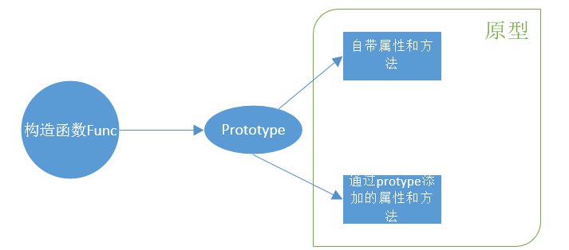
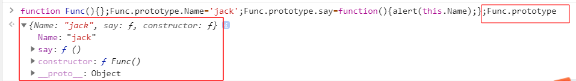
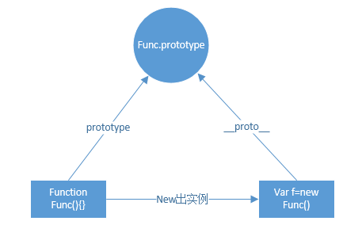
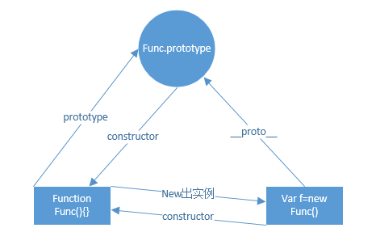
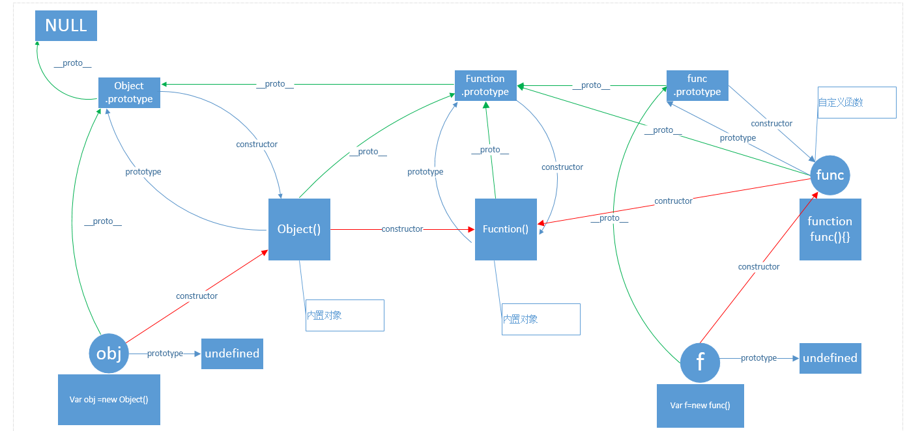

构造函数-->原型--->prototype-->__proto__-->constructor-->原型链
构造函数
什么是构造函数？我理解构造函数就是可以用来生成实例的函数。
function Func(name){
this.name=name;
this.say=function(){
alert('my name is '+this.name);
}
}
var f=new Func('jack');
f.say();上面的代码，f是函数Func new出来的实例，f是函数Func的实例，所以Func被称为构造函数。那么 Func的构造函数是谁呢，实际上它就是js内置函数Function，上面的代码等价于：
var Func=new Function('name','this.name=name;this.say=function(){alert("my name is"+this.name);}');
var f=new Func('jack');
f.say(); 那么这就是所谓的构造函数。
原型
prototype
每个函数(包括构造函数)都有一个prototype属性，可以在这个属性下面添加新的属性和方法，在此添加的属性和方法就会属于这个函数，这个构造函数new来的所有的实例都可以使用。这个prototype属性指向的对象，包括自带的属性和我们添加的属性、方法，我把它指向的对象的内容集合称为构造函数的原型。下面是我画的图

接下来看一个例子，可以印证上面关于原型的解释。

__proto__
每个对象的实例都会有一个__proto__属性，这个属性指向创建它的构造函数的原型。比如var f=new Func();那么f是Func的实例，那么f.__proto__就会等价于Func.prototype，即f.__proto__==Func.prototype.

constructor
每个实例对象会有一个constructor属性，这个属性指向的就是创建这个实例的构造函数，同时原型也有这个属性，指向对应的构造函数。

原型链
原型链，那么顾名思义就是一系列的原型组成的链条，可以看到Object，Function，自定义对象，自定义函数，函数实例等原型关系。实例化对象在调用属性或者方法时，先检查自己有没有，自己没有就会沿着原型链一层层的往上搜索。下面是我画的原型链图，看起来还挺有意思的，比如，Object的原型是Function，Function的原型是它自己，Function原型的原型又是Object的原型。

本文如有有错误的地方，还请帮忙指正，感谢。